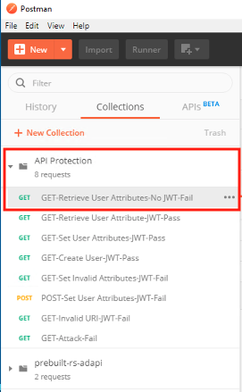
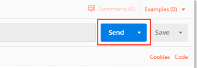
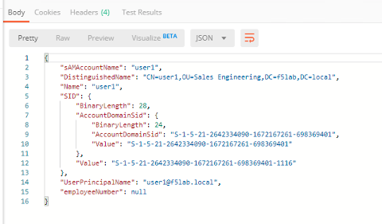
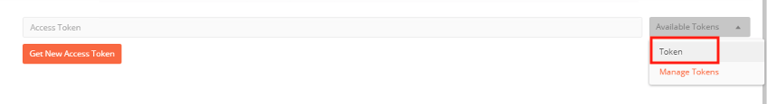
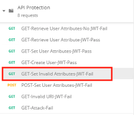
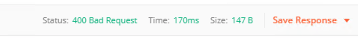
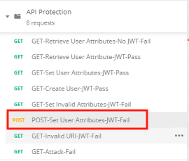

2.1.4. Lab – Test Course Grain Access¶
In this section, you will sample API requests to the new created api.acme.com virtual server to test functionality
2.1.4.1. Task – Send a valid GET without JWT to retrieve user1’s attributes¶
- From the Jumpbox, open Postman

- Expand the API Protection Collection
- Select the request GET-Retrieve User Attributes-No JWT-Fail

- Click Send

- You receive a 403 Forbidden Response since you do not have a valid JWT.

2.1.4.2. Task – Send a valid GET with JWT to retrieve user1’s attributes¶
- Select the request GET-Retrieve User Attributes-JWT-Pass

- Select the Authorization Tab

- Click Get New Access Token

- Review the Postman Configuration. Nothing should need to be modified
- Click Request Token

- Login using Username: user1, Password: user1

- Scroll down the token and click Use Token

- Notice the Access Token field is now populated

- Click Send
- You receive a 200 OK with attributes for user1 in the body of the response

2.1.4.3. Task – Send a valid GET with JWT to set user1’s employeeNumber¶
- Select the request GET-Set User Attributes-JWT-Pass

- Select the Authorization Tab
- Select the previously created token from the Available Tokens dropdown.

- The Token field is now populated
- Click Send
Note
If you receive a 403 repeat steps 10-13 to request a new token. You can change the name of the token request prior to sending by setting the Token Name.
Note
You can delete expired tokens by clicking the Available Tokens dropdown, clicking Manage Tokens, and then clicking the trashcan next to the Token
- You receive a 200 OK with a response body that contains user1’s employeeNumber 123456

2.1.4.4. Task – Send a valid GET with JWT to create a user¶
- Select the request GET-Create User-JWT-Pass

- Select the Authorization Tab
- Select the previously created token from the Available Tokens dropdown.
- The Token field is now populated
- Click Send
Note
If you receive a 403 repeat steps 10-13 to request a new token. You can change the name of the token request prior to sending by setting the Token Name.
Note
You can delete expired tokens by clicking the Available Tokens dropdown, clicking Manage Tokens, and then clicking the trashcan next to the Token
27. You receive a 200 OK with a response body that contains Bob Smith’s user attributes.

2.1.4.5. Task – Send invalid GET requests with JWT to set a nonexistent user attributes¶
- Select the request GET-Set Invalid Attributes-JWT-Fail

- Select the Authorization Tab
- Select the previously created token from the Available Tokens dropdown.
- The Token field is now populated
- Click Send
Note
If you receive a 403 repeat steps 10-13 to request a new token. You can change the name of the token request prior to sending by setting the Token Name.
Note
you can delete expired tokens by clicking the Available Tokens dropdown, clicking Manage Tokens, and then clicking the trashcan next to the Token
- You receive a 400 Bad Request. This is expected because the user doesn’t actually exist

2.1.4.6. Task – Send a POST request to a valid URI to set User1’s attributes¶
- Select the request POST-Set User Attributes-JWT-Fail

- Select the Authorization Tab
- Click Get New Access Token
- Review the Postman Configuration. Nothing should need to be modified
- Click Request Token
- Login using Username: user1, Password: user1
- Scroll down the token and click User Token
- Notice the the Token field is now populated
- Click Send
- You receive a 403 Forbidden. This is expected because the POST Method was not specified in the API protection profile for the URI /aduser/get

2.1.4.7. Task – Send a GET request to an invalid URI¶
- Select the request GET-Invalid URI-JWT-Fail

- Select the Authorization Tab
- Click Get New Access Token
- Review the Postman Configuration. Nothing should need to be modified
- Click Request Token
- Login using Username: user1, Password: user1
- Scroll down the token and click User Token
- Notice the the Token field is now populated
- Click Send
- You receive a 403 Forbidden. This is expected because the URI /hacker/attack was not specified in the API Protection Profile